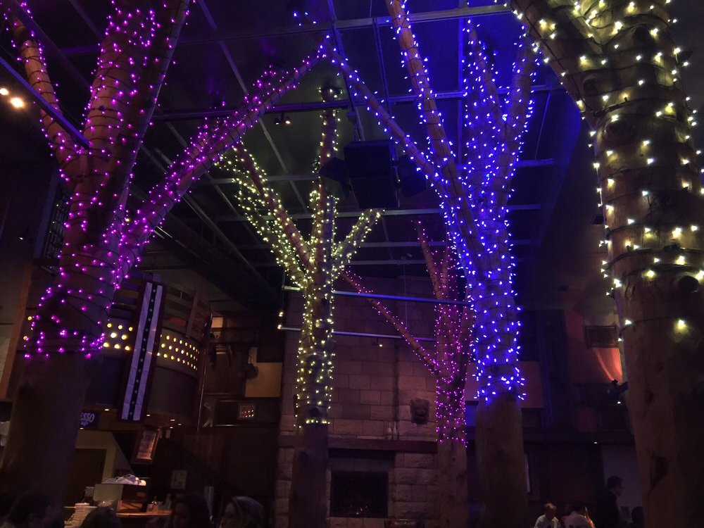
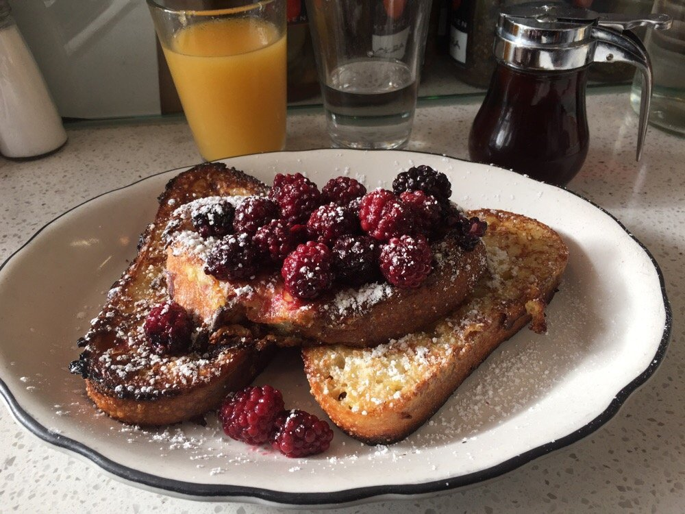

This is a blog that showcases the best brunch restaurants I've been to in the SF Bay Area. Click here to send me suggestions. Enjoy :)
The Grove - San Francisco
The Grove is at a convenient location near Yerba Buena Gardens and the Westfield mall. They serve breakfast, lunch, and dinner, but brunch is my favorite meal there. The ambiance is great- they have two-story trees wrapped in Christmas lights inside the restaurant. The place feels comfortable and rustic. They have all sorts of breakfast foods such as scambles, avocado toasts, pancakes, and breakfast burritos. This place is on the top of my list of places to eat brunch at.

Grand Lake Kitchen - Oakland
Grand Lake Kitchen is located right next to Lake Merritt in Oakland. They primarily only have outdoor seating, so this place is perfect for a quick meal on a sunny day by the lake. They have both unique breakfast options such as a savory french toast, as well as the classics. The food is made with high quality ingredients and the prices are reasonable.
